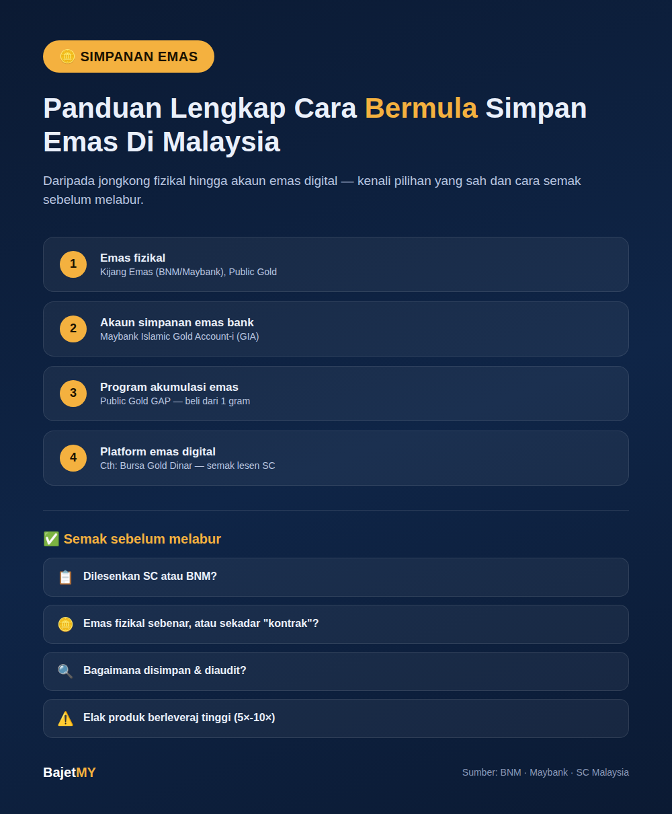

Emas kekal salah satu bentuk simpanan paling popular di Malaysia — dilihat sebagai pelindung nilai terhadap inflasi dan alternatif kepada simpanan tunai konvensional. Tetapi dengan pelbagai pilihan yang ada — daripada jongkong fizikal kepada akaun emas digital — ramai keliru bagaimana nak bermula, dan yang lebih penting, bagaimana membezakan platform yang sah berbanding yang berisiko.
Kenapa ramai simpan emas?
- Lindung nilai inflasi — nilai emas secara sejarah cenderung mengekalkan kuasa beli jangka panjang berbanding wang tunai
- Aset tangible — sesetengah pelabur lebih selesa memiliki sesuatu yang boleh dipegang secara fizikal
- Kepelbagaian portfolio — emas selalunya bergerak berbeza daripada saham/hartanah, membantu kurangkan risiko keseluruhan
- Pilihan patuh Syariah — kebanyakan produk emas di Malaysia direka patuh Syariah, sesuai untuk pelabur Muslim
Jenis-jenis simpanan emas di Malaysia
1. Emas fizikal (jongkong & syiling) Contoh: Kijang Emas — syiling emas 999.9 tulen ditempa oleh Bank Negara Malaysia, boleh dibeli melalui cawangan Maybank terpilih. Harga belian dan jualan balik ditentukan oleh harga pasaran emas antarabangsa semasa. Syarikat seperti Public Gold turut menjual jongkong/syiling fizikal dengan pilihan penghantaran atau simpanan vault.
2. Akaun Simpanan Emas Bank Contoh: Maybank Islamic Gold Account-i (GIA) — akaun jenis pasbuk yang membolehkan pelanggan beli/jual emas dalam gram tanpa perlu simpan fizikal sendiri. Sesuai untuk pelabur yang mahu pendedahan harga emas tanpa risiko keselamatan menyimpan barang fizikal di rumah.
3. Program Akumulasi Emas (Gold Accumulation Programme) Contoh: Public Gold GAP Account — membolehkan pembelian emas secara kecil-kecilan dari serendah 1 gram setiap kali, sesuai untuk pelabur yang mahu beli secara konsisten (dollar-cost averaging) berbanding sekali gus dalam jumlah besar.
4. Platform emas digital Beberapa platform dilesenkan oleh Suruhanjaya Sekuriti Malaysia (SC) untuk urus niaga emas digital, seperti Bursa Gold Dinar (platform rasmi Bursa Malaysia). Penting: landskap platform digital ini berubah-ubah — contohnya HelloGold, platform emas digital patuh Syariah pertama Malaysia, telah menghentikan perkhidmatan B2C (pengguna individu) walaupun terus beroperasi B2B. Ini menunjukkan pentingnya semak status platform secara berkala, bukan sekadar sekali semasa mendaftar.
Cara semak platform gold savings adalah SAH
Sebelum letak wang dalam mana-mana produk emas, semak:
- Adakah ia dilesenkan oleh SC atau BNM? — Semak senarai rasmi di laman web kedua-dua pihak berkuasa
- Adakah ia menjual emas fizikal sebenar, atau sekadar "kontrak" emas? — Model perniagaan yang berasaskan jualan emas fizikal sebenar (seperti Public Gold) berbeza risikonya berbanding produk yang hanya menawarkan pendedahan harga tanpa pemilikan sebenar
- Bagaimana emas disimpan dan diaudit? — Untuk platform simpanan vault, tanya siapa penyimpan sebenar dan adakah ia diaudit pihak ketiga bebas
- Elak produk berleveraj tinggi yang menjanjikan pendedahan 5×-10× ganda modal — ini menggandakan risiko kerugian, bukan sekadar keuntungan (rujuk kajian kes Quantum Metal untuk contoh sebenar risiko ini)
Peringatan: Reputasi syarikat atau tempoh operasi yang lama tidak bermakna semua produknya automatik berlesen. Semak setiap produk secara berasingan.
Perkara yang perlu dipertimbangkan
| Faktor | Penjelasan |
|---|---|
| Spread bida-tawar | Harga beli dan jual emas selalunya ada jurang (spread) — ini kos tersembunyi yang perlu difahami |
| Tiada pendapatan pasif | Berbeza dengan saham/EPF, emas tidak beri dividen atau faedah — keuntungan hanya daripada kenaikan harga |
| Kos penyimpanan | Emas fizikal memerlukan penyimpanan selamat (peti besi/vault) — sesetengah platform kenakan yuran simpanan |
| Zakat | Emas simpanan yang mencapai nisab dan cukup haul (setahun) tertakluk kepada zakat — rujuk badan zakat negeri masing-masing |
| Kecairan (liquidity) | Emas fizikal mungkin ambil masa lebih lama untuk dijual berbanding akaun emas digital |
Cara mula simpan emas dengan bijak
- Tentukan tujuan — simpanan jangka panjang, kepelbagaian portfolio, atau keperluan Syariah tertentu
- Mula kecil dan konsisten — guna program akumulasi (GAP/GIA) untuk beli secara berkala berbanding sekali gus
- Elak letak lebih daripada peratusan kecil portfolio keseluruhan dalam emas — ia patut jadi sebahagian strategi kepelbagaian, bukan simpanan tunggal
- Simpan resit/bukti pembelian dan semak penyata akaun secara berkala
- Jangan tergesa-gesa dengan tawaran "pulangan dijamin tinggi" — emas ialah aset yang nilainya turun naik ikut pasaran; sebarang jaminan pulangan tetap tinggi adalah tanda amaran
Ringkasan
Simpanan emas kekal pilihan sah dan popular di Malaysia — daripada Kijang Emas fizikal, akaun emas bank seperti Maybank GIA, sehingga program akumulasi seperti Public Gold GAP. Kunci untuk simpan emas dengan selamat: semak status lesen SC/BNM bagi setiap produk secara berasingan, faham struktur kos (spread, yuran simpanan), dan elak produk berleveraj tinggi yang menjanjikan pulangan luar biasa.
Sumber
- Bank Negara Malaysia — Kijang Emas Prices
- Maybank Malaysia — Islamic Gold Account-i
- Suruhanjaya Sekuriti Malaysia — senarai platform pelaburan emas berlesen